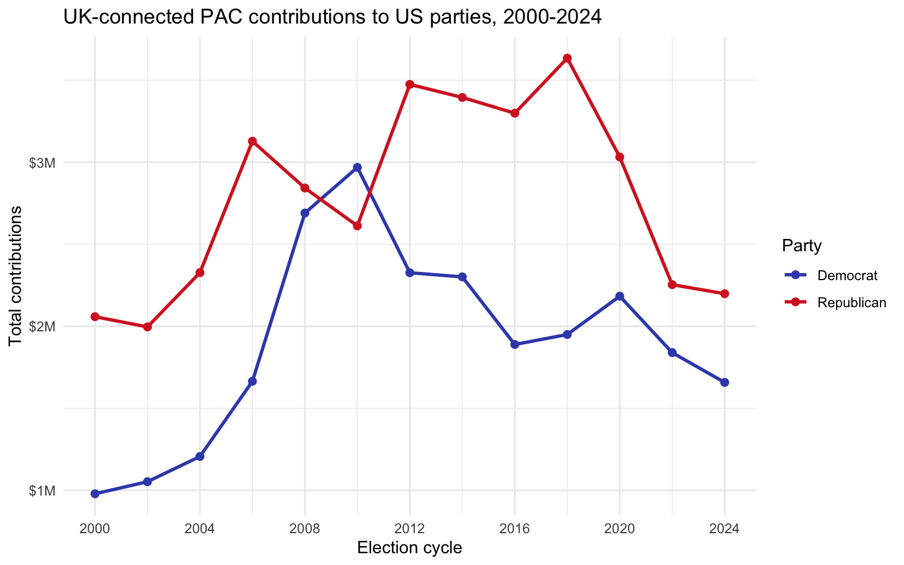

library(tidyverse)
library(janitor)Open Secrets: Foreign-Connected PAC Contributions
Contributions to US political parties from foreign-connected PACs, 2000-2024
Background
Only American citizens (and immigrants with green cards) can contribute to federal politics, but the American divisions of foreign companies can form political action committees (PACs) and collect contributions from their American employees. This analysis works with data on contributions to US political parties from foreign-connected PACs across 13 election cycles between 2000 and 2024. (Source)
a. Load and stack the data
Each CSV covers one election cycle and is named with the cycle’s year range (e.g. Foreign Connected PACs, 1999-2000.csv). Passing the vector of file paths to a single read_csv() call stacks them, and the id argument records which file each row came from so we can recover the year.
files <- list.files("data", full.names = TRUE)
pac_raw <- read_csv(files, id = "file")
pac_raw# A tibble: 2,639 × 6
file `PAC Name (Affiliate)` Country of Origin/Pa…¹ Total Dems Repubs
<chr> <chr> <chr> <chr> <chr> <chr>
1 data/Foreig… 7-Eleven Japan/Ito-Yokado $8,5… $1,5… $7,000
2 data/Foreig… ABB Group Switzerland/Asea Brow… $46,… $17,… $28,5…
3 data/Foreig… Accenture UK/Accenture plc $75,… $23,… $52,9…
4 data/Foreig… ACE INA UK/ACE Group $38,… $12,… $26,0…
5 data/Foreig… Acuson Corp (Siemens … Germany/Siemens AG $2,0… $2,0… $0
6 data/Foreig… Adtranz (DaimlerChrys… Germany/DaimlerChrysl… $10,… $10,… $500
7 data/Foreig… AE Staley Manufacturi… UK/Tate & Lyle $24,… $10,… $14,0…
8 data/Foreig… AEGON USA (AEGON NV) Netherlands/Aegon NV $58,… $10,… $47,7…
9 data/Foreig… AIM Management Group UK/AMVESCAP $25,… $10,… $15,0…
10 data/Foreig… Air Liquide America France/L'Air Liquide … $0 $0 $0
# ℹ 2,629 more rows
# ℹ abbreviated name: ¹`Country of Origin/Parent Company`b. Clean and transform
We use janitor::clean_names() to standardize the column names, then:
- Derive
yearfrom the file path, using the ending year of each election cycle (e.g. the 1999-2000 file becomes2000). - Split
Country of Origin/Parent Companyinto separatecountry_of_originandparent_companycolumns. A few entries contain extra/characters, so we merge any surplus pieces back into the parent company. - Convert the dollar-formatted
total,dems, andrepubsstrings to numbers. Some amounts are written in parentheses (e.g.($3,000)), an accounting convention for negative values, so we can’t rely onparse_number()alone — it strips the parentheses and would return a positive number. Theparse_dollar()helper below flags parenthesized strings and negates them.
parse_dollar <- function(x) {
negative <- str_detect(x, "^\\s*\\(")
amount <- parse_number(x)
if_else(negative, -amount, amount)
}pac <- pac_raw |>
clean_names() |>
mutate(
year = as.integer(str_extract(str_extract(file, "\\d{4}\\.csv$"), "\\d{4}"))
) |>
separate_wider_delim(
country_of_origin_parent_company,
delim = "/",
names = c("country_of_origin", "parent_company"),
too_many = "merge"
) |>
mutate(across(c(total, dems, repubs), parse_dollar)) |>
rename(pac_name = pac_name_affiliate) |>
select(year, pac_name, country_of_origin, parent_company, dems, repubs, total)
pac |>
slice_head(n = 10)# A tibble: 10 × 7
year pac_name country_of_origin parent_company dems repubs total
<int> <chr> <chr> <chr> <dbl> <dbl> <dbl>
1 2000 7-Eleven Japan Ito-Yokado 1500 7000 8500
2 2000 ABB Group Switzerland Asea Brown Bo… 17000 28500 46000
3 2000 Accenture UK Accenture plc 23000 52984 75984
4 2000 ACE INA UK ACE Group 12500 26000 38500
5 2000 Acuson Corp (Sieme… Germany Siemens AG 2000 0 2000
6 2000 Adtranz (DaimlerCh… Germany DaimlerChrysl… 10000 500 10500
7 2000 AE Staley Manufact… UK Tate & Lyle 10000 14000 24000
8 2000 AEGON USA (AEGON N… Netherlands Aegon NV 10500 47750 58250
9 2000 AIM Management Gro… UK AMVESCAP 10000 15000 25000
10 2000 Air Liquide America France L'Air Liquide… 0 0 0c. Pivot longer
To make party a variable rather than encoding it in the column names, we pivot dems and repubs into a single party column with an accompanying amount column.
pac_long <- pac |>
pivot_longer(
cols = c(dems, repubs),
names_to = "party",
values_to = "amount"
) |>
mutate(party = if_else(party == "dems", "Democrat", "Republican"))
pac_long |>
slice_head(n = 10)# A tibble: 10 × 7
year pac_name country_of_origin parent_company total party amount
<int> <chr> <chr> <chr> <dbl> <chr> <dbl>
1 2000 7-Eleven Japan Ito-Yokado 8500 Demo… 1500
2 2000 7-Eleven Japan Ito-Yokado 8500 Repu… 7000
3 2000 ABB Group Switzerland Asea Brown Bo… 46000 Demo… 17000
4 2000 ABB Group Switzerland Asea Brown Bo… 46000 Repu… 28500
5 2000 Accenture UK Accenture plc 75984 Demo… 23000
6 2000 Accenture UK Accenture plc 75984 Repu… 52984
7 2000 ACE INA UK ACE Group 38500 Demo… 12500
8 2000 ACE INA UK ACE Group 38500 Repu… 26000
9 2000 Acuson Corp (Sieme… Germany Siemens AG 2000 Demo… 2000
10 2000 Acuson Corp (Sieme… Germany Siemens AG 2000 Repu… 0d. UK contributions by cycle and party
For each election cycle, we sum contributions to each party from PACs whose country_of_origin is the UK. The result has two rows per year, one per party.
pac_uk <- pac_long |>
filter(country_of_origin == "UK") |>
summarise(total_amount = sum(amount, na.rm = TRUE), .by = c(year, party)) |>
arrange(year, party)
pac_uk |>
slice_head(n = 10)# A tibble: 10 × 3
year party total_amount
<int> <chr> <dbl>
1 2000 Democrat 978725
2 2000 Republican 2058518
3 2002 Democrat 1052433
4 2002 Republican 1996272
5 2004 Democrat 1206201
6 2004 Republican 2327001
7 2006 Democrat 1664491
8 2006 Republican 3128235
9 2008 Democrat 2690413
10 2008 Republican 2842956e. Visualization
ggplot(pac_uk, aes(x = year, y = total_amount / 1e6, color = party)) +
geom_line(linewidth = 1) +
geom_point(size = 2) +
scale_color_manual(values = c(Democrat = "#3A4EB8", Republican = "#D62728")) +
scale_x_continuous(breaks = seq(2000, 2024, 4)) +
scale_y_continuous(labels = scales::label_dollar(suffix = "M")) +
labs(
x = "Election cycle",
y = "Total contributions",
color = "Party",
title = "UK-connected PAC contributions to US parties, 2000-2024"
) +
theme_minimal()
Design choices. Contributions are a quantity tracked over time, so a line chart (with points marking each observed cycle) is more appropriate than bars: it emphasizes the trajectory and makes the two parties’ paths easy to compare. Party is mapped to color using each party’s conventional blue/red, which is intuitive and needs no legend lookup. The x-axis is broken at every election cycle (every four years for readability), and the y-axis is scaled to millions of dollars for legibility.
What it reveals. Republican-connected UK PAC contributions were consistently higher than Democratic ones for most of the period, with a notable exception around the 2008-2010 cycles when Democratic contributions rose sharply and briefly overtook the Republicans. Both parties saw contributions grow through the mid-2000s. Republican contributions peaked around 2012-2018 at roughly $3.3-3.7M before falling back, while Democratic contributions have generally trended downward since their 2010 peak. The most recent cycles (2020-2024) show both parties declining, with the Republican advantage narrowing to a fairly small gap by 2024.